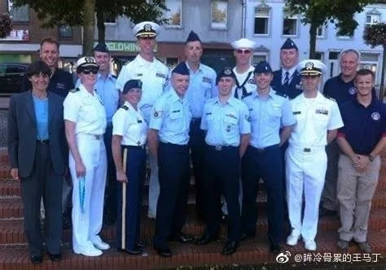
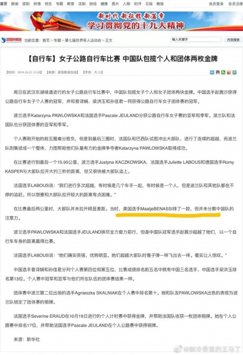
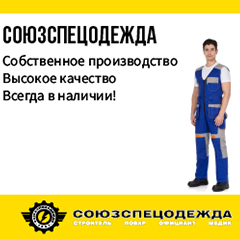

В Китае заявили о том, что американский 'нулевой пациент' был в Ухане осенью прошлого года
В Китае вновь заговорили об американском следе в возникновении COVID-19.'Нулевой пациент' Соединённых Штатов мог быть связан с биологической лабораторией в США и посетить Ухань осенью прошлого года.
Блогер Вэй Цаньжун сообщает о велогонщице Маате Банасси (Maatje Benassi), которая принимала участие во Всемирных военных играх в октябре 2019-го.

Коронавирус диагностирован также у двух её родственников, один из которых, Мэтью Бенасси (Matthew Benassi), якобы работает в биологической лаборатории Форт Детерик.
Эта версия появляется на фоне обвинений в вине Китая в распространении вируса со стороны Дональда Трампа.Американский президент сейчас, во-первых, старается избежать ответственности за бездействие в начале эпидемии, во-вторых, пробует усилить враждебность всего мира по отношению к Китаю, и в-третьих, может добиваться компенсаций от Китая.Социологические опросы показывают, что эта пропаганда не бесплодна и 42% американцев уверены, что Китай должен выплатить компенсации за эпидемию коронавируса.

В настоящее время в США уже больше 30 тыс.заболевших и это количество растёт быстрее, чем в Италии.
Однако, по мнению Вэя, доказательство американского происхождения COVID-19 найдено и его невозможно отрицать.
Ранее вопрос о возможной роли американских военных задал спикер МИД КНР Чжао Лицзянь.Официальные лица – посол Китая в Соединённых Штатах и коллеги по МИД подчёркивают, что это лишь частное мнение, а настоящий источник вируса только предстоит определить учёным.Тем не менее Чжао не был наказан или отстранён от дипломатической службы.Так что его твит вряд ли был самодеятельностью или оплошностью.Информационная война продолжается и Китай, пусть и неофициально, продолжает использовать в ней версию об американском следе.
Posted On: 2020-03-25T11:25:00

Content Date: 2020-03-25
Download Date: 2021-05-13
Document ID: L0C04C2HD